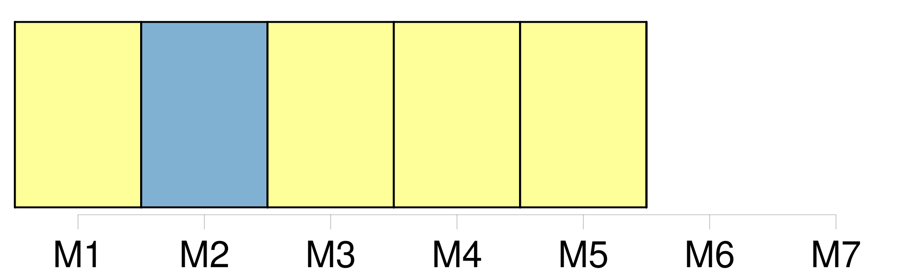
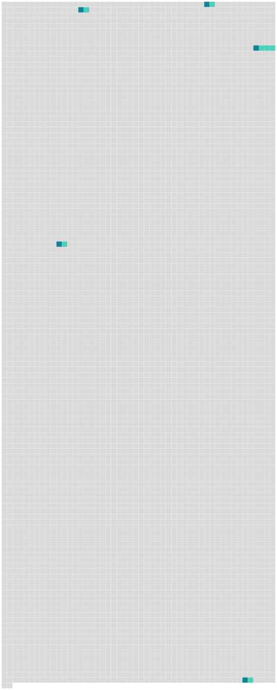

Longueur nb maillons : 5 mentions |
 |
Douce ne demandait pas mieux que de se baigner dans le ruisseau et que pêcher dans l'étang, mais pour cela il fallait sortir du verger, et son grand-père le lui défendait sévèrement, quoique [la barrière] fût fermée d'un solide cadenas dont il gardait la clé. Noël, que rien n'embarrassait, trouvait tout simple de faire franchir [cette barrière] à la fillette, mais elle refusait. [20 phrases] Et de fait, Tou, qui ne s'inquiétait pas de dénonciation, avait vite compris que, si la grille était trop haute, il lui restait [la barrière d'entrée] si souvent franchie déjà. [73 phrases]
En l'accompagnant à [la barrière] , elle dit encore : [212 phrases] Noël entrait maintenant par [la barrière] , comme tout le monde. |
 |
Il est possible de télécharger la ressource sur la page Ortolang |
Si vous avez des questions ou vous voyez des erreurs, merci d'envoyer un mail à silvia.federzoni89@gmail.com |